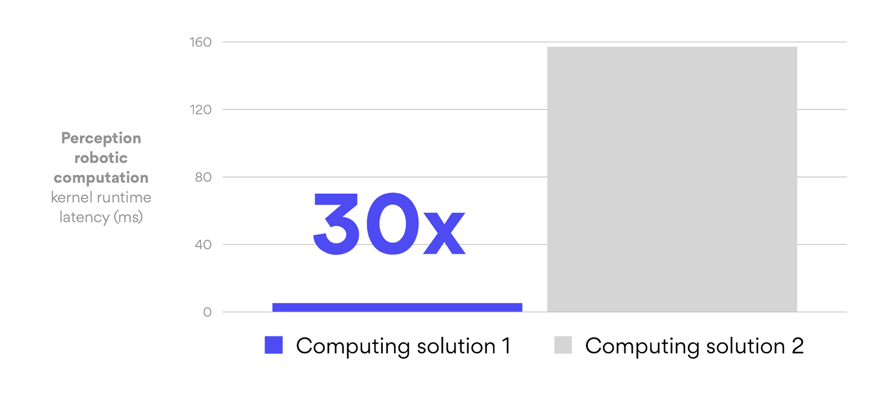
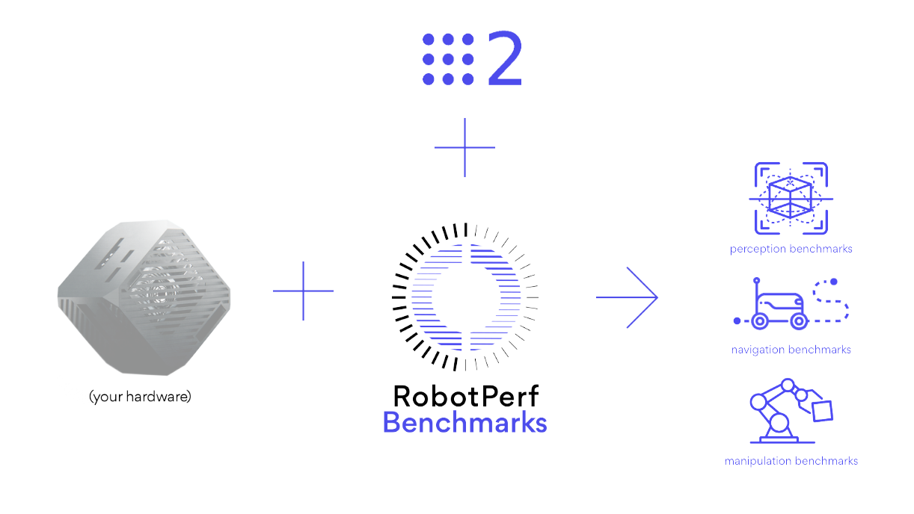
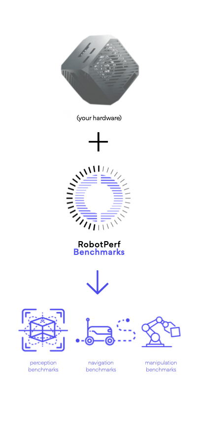
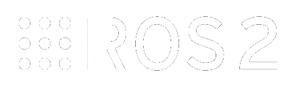
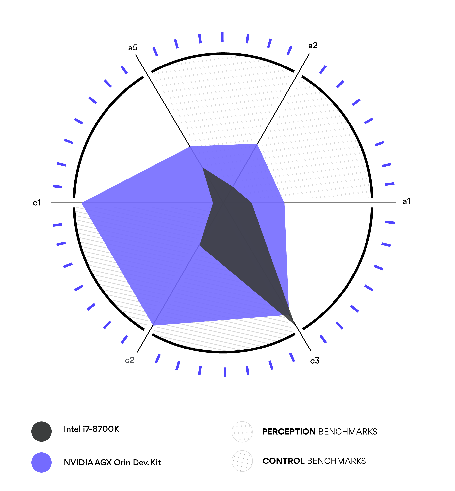

Powered by leading players in
industry, academia and research labs


RobotPerf™ provides an open reference benchmarking suite that is used to evaluate robotics computing performance fairly with ROS 2 as its common baseline, so that robotic architects can make informed decisions about the hardware and software components of their robotic systems.
RobotPerf™ source code RobotPerf™ reportsBenchmarking is the act of running a computer program with a known workload to assess the program's relative performance. Performance information can help roboticists design more efficient robotic systems and select the right hardware for their robotic application.
The myriad combinations of robot hardware and robotics software make assessing robotic-system performance challenging, specially in an architecture-neutral, representative, and reproducible manner. RobotPerf™ addresses this issue delivering a reference performance benchmarking suite that is used to evaluate robotics computing performance across CPU, GPU, FPGA and other compute accelerators. The benchmarks are designed to be representative of the performance of a robotic system and to be reproducible across different robotic systems. For that, RobotPerf™ builds on top of ROS 2, the de facto standard for robot application development.
 Represented by consortium of robotics leaders from industry, academia and research labs, RobotPerf™ is formated as an open project whose mission is to build open, fair and useful robotics benchmarks that are technology agnostic, vendor-neutral and provide unbiased evaluations of robotics computing performance for hardware, software, and services.
Benchmarking assists in performance evaluation. Roboticists can use performance data to develop more efficient robotic systems and choose the appropriate hardware for each robotic application with the help of performance data. It can also aid in comprehending the trade-offs between algorithms implementing the same skill.
RobotPerf™ aligns to robotics standards so that you don’t spend time reinventing the wheel and re-develop what already works for most. Particularly benchmarks are conducted using the Robot Operating System 2 (ROS 2) as its common baseline. RobotPerf™ also aligns to standardization initiatives within the ROS ecosystem related to computing performance and benchmarking such as REP 2008 (ROS 2 Hardware Acceleration Architecture and Conventions). See the RobotPerf™ Specification for more details.

Robot behaviors take the form of computational graphs, with data flowing between computation Nodes, across physical networks (communication buses) and while mapping to underlying sensors and actuators. The popular choice to build these computational graphs
for robots these days is the Robot Operating System (ROS), a framework for robot application development. ROS enables you to build computational graphs and create robot behaviors by providing libraries, a communication infrastructure,
drivers and tools to put it all together. Most companies building real robots today use ROS or similar event-driven software frameworks. ROS is thereby the common language in robotics, with several hundreds of companies and thousands
of developers using it everyday. ROS 2 was redesigned from the ground up to address some of the challenges in ROS and solves many of the problems in building reliable robotics systems.
ROS 2 presents a modern and popular framework for robot application development most silicon vendor solutions support, and with a variety of modular packages, each implementing a different robotics feature that simplifies
performance benchmarking in robotics.
For robotic architects, delving into the multifaceted dimensions of computing performance is crucial, yet often intricate. RobotPerf™ stands as a beacon in this space, offering a range of visualizations tailored for clarity and depth. One such illustration is the polar plot, which displays benchmarks within a particular robotic computing category on separate axes. Through RobotPerf™, architects can instantly perceive a system's proficiency across these benchmarks. They can pinpoint both the strengths and areas of improvement, and thereby make informed decisions in design and optimization. With RobotPerf™, the complexity of robotics computing performance is transformed into actionable insights, making the architect's role not only simpler but also more effective.
GREY-BOX is an application-specific measure capable of watching internal states of the system that can measure (probe) certain points in the system, thus generate the measurement data with minimal interference incurring into a minimal average latency of only 3.3 us, making it well-suited for real-time systems. This approach is more complex, but it offers a more detailed analysis, and makes it more appealing for real-world robotic applications and real-time systems, but a less good choice for quick prototyping.
BLACK-BOX measures performance by eliminating the layers above the layer-of-interest and replacing those with a specific test application or compute node. While this approach doesn't need extra instrumentation, and is easier to implement, it offers a less detailed analysis, has limited data points, and uses a non-standard data format while altering the computational graph (introducing new nodes). This makes it less appealing for real-world robotic applications and real-time systems, but a good choice for quick prototyping.
New categories may appear over time.
Perception
Localization
Communications middleware
Control
Navigation
Manipulation
We are the leaders the ROS 2 Hardware Acceleration Working Group (HAWG) and drive the creation,
maintenance and testing of hardware acceleration for ROS 2 and Gazebo.
RobotPerf™ is being driven by members of the same group who previously created MLPerf™ and other popular industry benchmarks. Join us to contribute and democratize the benchmarking of robotics software.